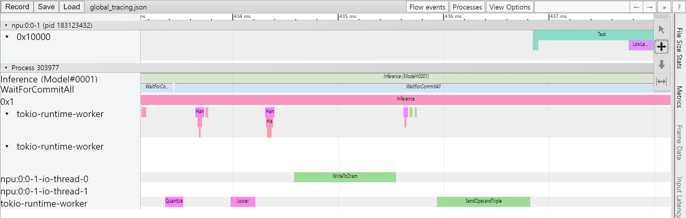

Release Notes - 0.7.0
Furiosa SDK 0.7.0 is a major release, and includes approximately 1,400 commits towards performance enhancement, added functions, and bug fixes.
Package name |
Version |
|---|---|
NPU Driver |
1.3.0 |
HAL (Hardware Abstraction Layer) |
0.8.0 |
Furiosa Compiler |
0.7.0 |
Python SDK (furiosa-runtime, furiosa-server, furiosa-serving, furiosa-quantizer, ..) |
0.7.0 |
NPU Device Plugin |
0.10.0 |
NPU Feature Discovery |
0.1.0 |
NPU Management CLI (furiosactl) |
0.9.1 |
How to upgrade
The upgrade is a simple process if you are using an APT repository. Detailed information on APT repository setting and installation can be found in Driver, Firmware, and Runtime Installation.
apt-get update && \ apt-get install -y furiosa-driver-pdma furiosa-libnux pip install --upgrade furiosa-sdk
Key changes
Compiler - More NPU acceleration supports
Through improvements in the compiler, more operators can be accelerated in various use cases. Accelerated operators with its condition adopted by 0.7.0 release are following. You can find the entire list of accelerated operators at List of Supported Operators for NPU Acceleration.
Added Linear and Nearest mode support for the Resize operator
Added DCR mode support for the SpaceToDepth operator
Added DCR mode support for the DepthToSpace operator
Added CHW axis support for the Pad operator
Added C axis support for the Slice operator
Added acceleration support for operators Tanh, Exp, and Log
Added C axis support for the Concat operator
Increased Dilation support to up to x12
Added acceleration support for operators Gelu, Erf, and Elu
Compiler - Compiler Cache
Compiler cache stores the compiled binary into a cache directory, and reuses the cache when the same model is compiled. Also, you can also use Redis as the compiler cache storage. More detailed instructions can be found in Compiler Cache.
Compiler - Compiler Hint
When running a function that includes compilation,
such as session.create(), a path that includes the compilation log is printed as follows.
Saving the compilation log into /home/furiosa/.local/state/furiosa/logs/compile-20211121223028-l5w4g6.log
Since 0.7.0, compilation logs contain compilation hints more helpful to understand the compilation process and give some optimization opportunities.
The cat <log file> | grep Hint command will show you only hint from the log.
The hint informs why certain operators are not accelerated as shown in the below example.
cat /home/furiosa/.local/state/furiosa/logs/compile-20211121223028-l5w4g6.log | grep Hint 2022-05-24T02:44:11.399402Z WARN nux::session: Hint [19]: 'LogSoftmax' cannot be accelerated yet 2022-05-24T02:44:11.399407Z WARN nux::session: Hint [12]: groups should be bigger than 1 2022-05-24T02:44:11.399408Z WARN nux::session: Hint [17]: Softmax with large batch (36 > 2) cannot be accelerated by Warboy
Performance Profiling Tools
The profiler had been an experimental and closed-beta feature. The release 0.7.0 includes the performance profiler by default. It allow users to view the time taken in each step in the model inference process. You can activate the profiler through a shell environment variable or a profiler context in your Python code.
More details can be found in Performance Profiling.
{kind=link}
Improvements/Bug fixes of Python SDK
Since 0.7.0,
session.create()andsession.create_async()can take the batch size.Fixed a bug that compiler options passed to
session.create()andsession.create_async()wasn’t effective.
Below is an example that uses batch size and compiler option.
config = { "without_quantize": { "parameters": [{"input_min": 0.0, "input_max": 255.0, "permute": [0, 2, 3, 1]}] } } with session.create("model.onnx", batch_size=2, compile_config=config) as sess: outputs = sess.run(inputs)
Improvements/Bug fixes of Quantization tools
You can now infer published tensor shapes even if axes property is not designated in ONNX Squeeze operators below version OpSet 12
Added support not just for Conv receiving tensors with NxCxHxW shapes as input, but also for Conv receiving tensors with NxCxD shapes
Modified “Conv - BatchNormalization” subgraph to be fused to Conv even when Conv does not receive bias as input
Modified to always quantize Sub, Concat, and Pow operators in QDQ format, regardless of whether operands have initial values, so that the model can be processed in a consistent way in the post-quantization process
Modified to prevent ONNX Runtime related warnings in the quantization process and the result model
Reinforced the inspection condition to not miss any cases where tensor shape information cannot be inferred
Modified to allow random calibration not only for models that receive float32 data as inputs, but also for models that receive other decimal or integer types as inputs
Modified to find and terminate in a stable manner when given an already quantized model
Modified to adjust scale of weight appropriately if Conv data input or scale of weight is too small, such that scale of bias becomes 0
Reinforced conditions for “Gather - MatMul” subgraph to be fused into Gather
Dependent libraries updated to latest version
Device Plugin - Configuration file support
A function to set the execution option of the NPU Device Plugin used in Kubernetes with a file has been added. As before, option items can be entered as command-line arguments, or options can be specified by selecting a configuration file. Detailed instructions can be found in Kubernetes Support.